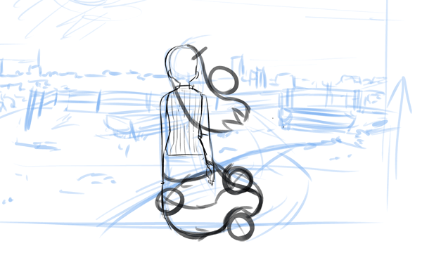

Animation is an excellent medium for making a strong and unforgettable connection with viewers. They may be used to make instructional films, product demos, and other types of videos. You can develop original and compelling material to share with your target audience if you use the appropriate method.
Choosing a style is one of the most significant aspects in the animation production process, as we covered last time. Various sorts of animation techniques transmit distinct tones and are better suited for different objectives.
Here are some of the most commonly used animation techniques to help you understand what they are.
1. Traditional
- each frame was manually hand drawn, which may be incredibly time-consuming.
Today, animators have access to digital tools and techniques that help to streamline the 2D animation process.
2. 2D Animation
- used to create 2D characters and environments that are flat. While this is one of the oldest animation styles, its versatility makes it a popular choice for cartoons, promotional videos, explainer videos, and other applications.
3. 3D Animation
- allowed artists to create more immersive, realistic animated experiences, commonly utilized for full-length movies, interactive advertising, commercials, and other marketing materials.
4. Stop Motion
- Animators photograph still objects in a specific order and string these photographs together to create the illusion of movement. It is a very inexpensive animation approach owing to the absence of requirement for expensive equipment and facilities.
5. Rotoscope
- takes live-action footage and traces it with a rotoscope tool, similar to how traditional animation styles trace photographs onto glass panels.
The differentanimation techniques also needs different tools:
1. 3D Animation - a. Autodesk Maya, industry standard for computer animation, b. Blender, provides a broad spectrum of modeling, texturing, lighting, animation and video post-processing functionality in one package, or c. Cinema 4D, is a 3D program for the After Effects user.
2. Traditional Animation - a. Toon Boom Harmony, is a more advanced 2D software ideal for both frame-by-frame animation and rig-based animation, or b. TVPaint, was built with hand-drawn traditional style animation in mind.
3. 2D Animation – a. Adobe Animate CC, s vector based, very intuitive to use, b. Adobe After Effects, gives you great control when creating rigs for 2D, or c. Adobe Character Animator, use input from a camera and microphone to do real-time performance capture and automatically animate characters.
4. Stop Motion - You can use materials such as a. Clay, where malleable characters are used, b. Puppets, faces of the characters can be replaced based on the expression, or controlled within the rig, or Cut-out, characters are built out of paper shapes.
The special terms you need to remember are:
1. ANIMATION TECHNIQUES
- are different styles for animation that can help communicate
an objective in various manners.
2. 2D ANIMATION
- used to create 2D characters and environments that are flat.
3. 3D ANIMATION
- using 3-dimensional elements, allowed artists to create more immersive, realistic animated experiences.
Look at the 2D sample.
